Partials builds every note out of up to 516 sine waves, called partials. Almost everything in the top half of the window changes those partials before they are turned into sound: how loud each one is, where it sits in pitch, and how that changes over time. The display on the right shows them as you play.
How to read the pictures in this manual. Every dark picture was made by the synth itself. Time runs left to right, pitch runs bottom to top, and each horizontal line is one partial. In most of them one note is held while one control is moved from one end to the other, so you can see what that control does. Brightness is tilted a little towards the top so high partials stay visible.
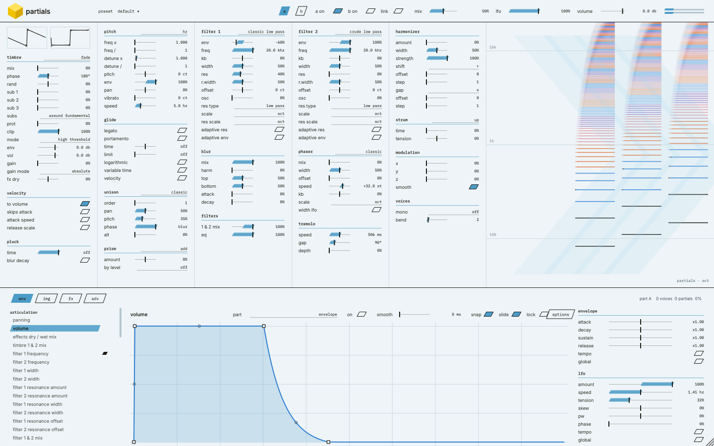
| A bar | Drag sideways or up and down. Hold Shift for fine steps. Double-click to reset. The mouse wheel also works. |
| A value with ▾ | A menu. Click it. |
| slanted box | A switch: filled = on. Click it. |
| Right-click a bar | Reset, copy the value to the other part, open its articulator (envelope, LFO, mappings) in the ENV page, or quick-map it to X, Y or Z. |
| Partial display | Shows the newest note of the part you are looking at. Click it to switch between an octave scale and a Hz scale. Hover to read a frequency. |
| A and B | Two complete synths. The A / B buttons choose which one the controls show. "A on" / "B on" switch them on. "mix" balances them. "link" makes every edit apply to both. |
| Preset menu | Built-in presets, your saved ones (in Music / Partials / Presets), save, open, and copy / paste of a whole preset or one part. |
| Window size | Drag the bottom-right corner. Everything scales. |
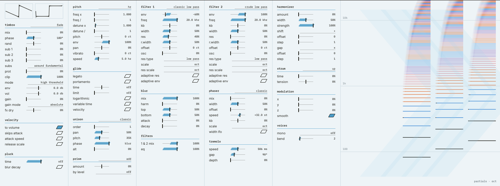
The two small pictures at the top left are timbre 1 and timbre 2: the starting waveforms. Timbre 1 starts as a saw (every partial, each one quieter than the last), timbre 2 as a square (every other partial). Click a picture to draw its partials in the ENV page. Right-click it for saw, square, triangle, sine, random, or to analyze a single-cycle wave file. You can also drop a wave file on it.
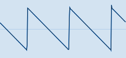
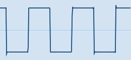
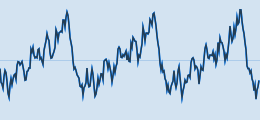
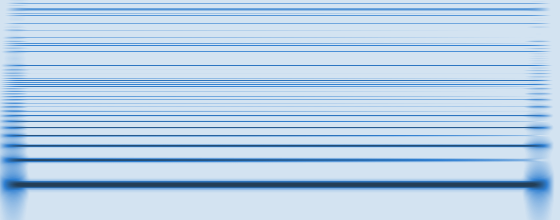
time →pitch ↑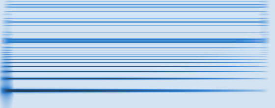
time →pitch ↑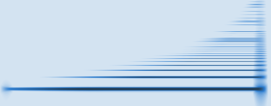
time →pitch ↑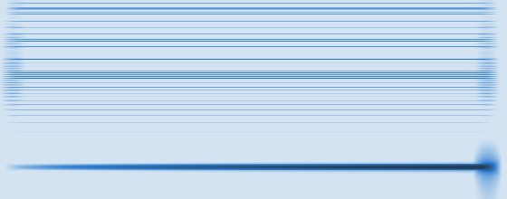
time →pitch ↑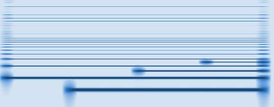
time →pitch ↑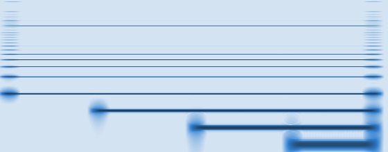
time →pitch ↑| Blend menu | How the two timbres combine: Fade, Subtract, Multiply, Maximum, Minimum, or Pluck (timbre 2 appears as the pluck dies away). |
| phase | Where in the wave each note starts, 0 to 360°. |
| rand | Left: each partial gets its own random phase. Right: the whole wave starts at a random point on each note. |
| env / vol | Volume before the partials become sound (env) and after (vol). |
| gain, gain mode | Auto-gain. Evens out the level when shaping removes or adds a lot. Absolute aims at a fixed level, Relative at the level before shaping. |
| fx dry | How much of this part skips the effects. 0% is all through the effects, 100% all dry. Negative values flip the dry signal. |
| VELOCITY | What key velocity does: volume, skipping part of the attack, attack speed, release length. |
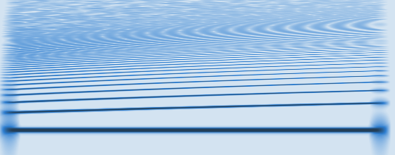
time →pitch ↑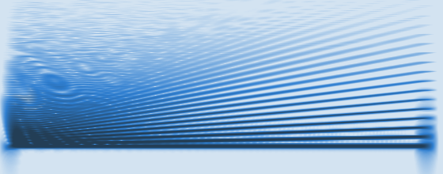
time →pitch ↑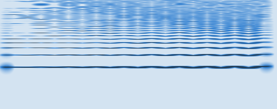
time →pitch ↑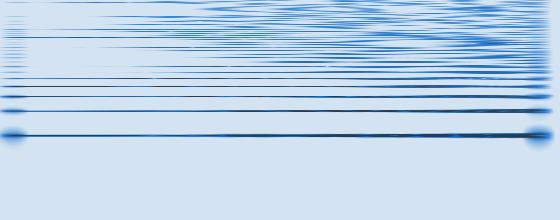
time →pitch ↑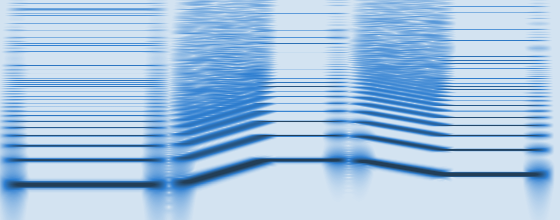
time →pitch ↑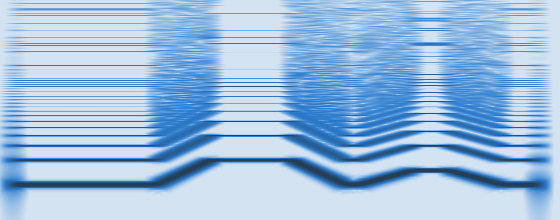
time →pitch ↑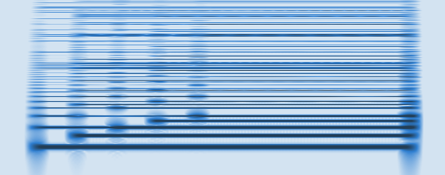
time →pitch ↑| freq x, freq / | Multiply and divide the pitch. 1/2 is an octave down, 2/1 an octave up. |
| pitch | Fine pitch, two octaves either way. "env" scales the pitch envelope. |
| GLIDE time | Left of centre: milliseconds (up to 1.5 s). Right: steps of the host tempo. "limit": legato only bends within this distance; portamento never slides further than this. |
| logarithmic / variable time / velocity | Curved slide; longer slides for bigger jumps; harder notes slide faster. |
| UNISON order | 1 to 9 copies. "pan" spreads them left and right, "phase" at 100% (blur) gives each copy random phases, lower values space them evenly, "alt" flips every second copy in the right channel for extra width. |
| Unison type | Classic (wide), Uniform (even), Blurred (drifting), Random, Hz (same spread in Hz for every partial). |
| STRUM tension | Left: the notes speed up through the chord. Right: they slow down. The menu sets the direction: Up, Down, Alt, Random. |
Two filters. They work on the partials, so they add nothing of their own: a partial is simply made louder or quieter. Each picture below holds one note while freq is swept from high to low.
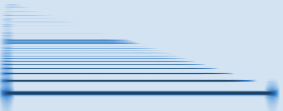
time →pitch ↑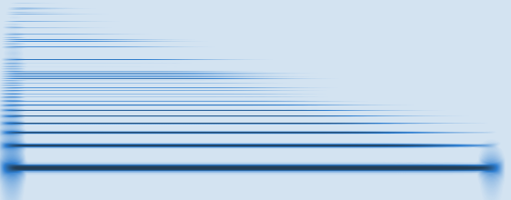
time →pitch ↑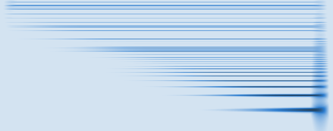
time →pitch ↑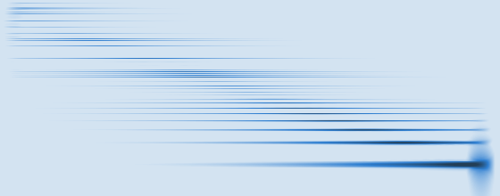
time →pitch ↑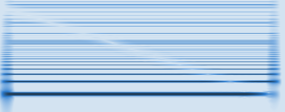
time →pitch ↑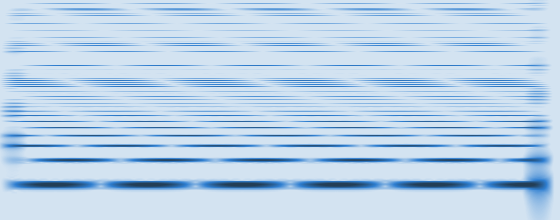
time →pitch ↑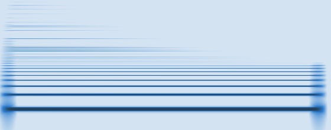
time →pitch ↑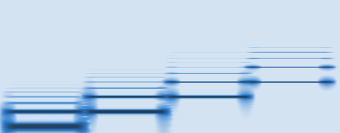
time →pitch ↑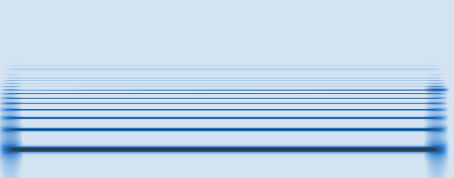
time →pitch ↑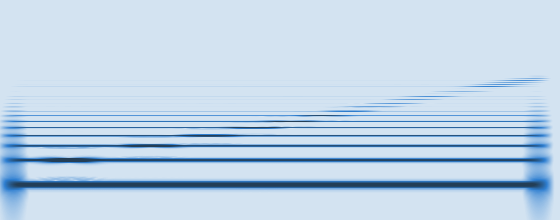
time →pitch ↑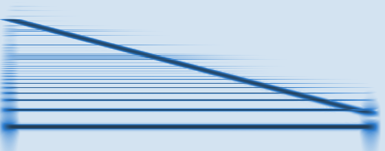
time →pitch ↑Same sweep each time, res at 80%.
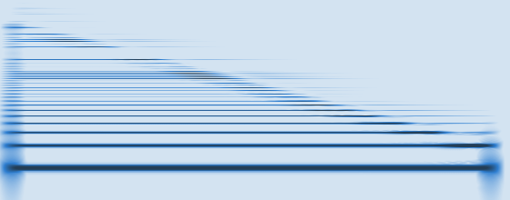
time →pitch ↑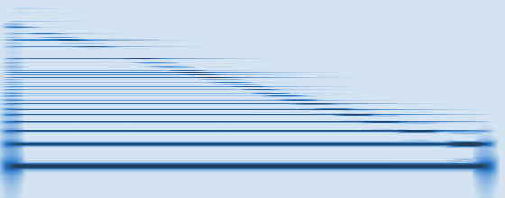
time →pitch ↑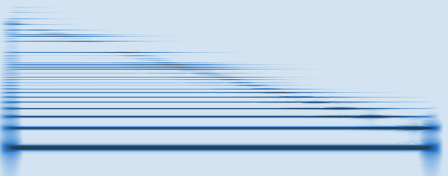
time →pitch ↑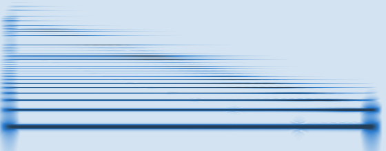
time →pitch ↑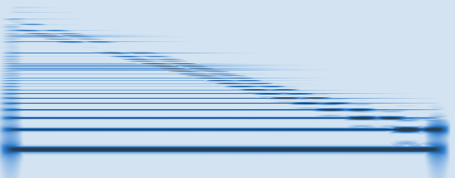
time →pitch ↑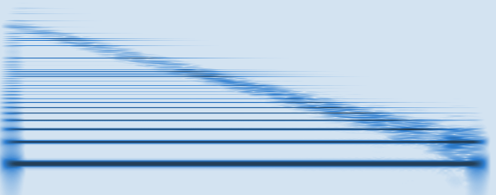
time →pitch ↑| env | How far the filter-frequency envelope moves the cutoff, either way. Nothing happens until that envelope is switched on (right-click freq, Edit articulator). |
| r.width | Width of the resonance bump. "adaptive res" keeps it sounding the same up and down the keyboard. |
| scale, res scale | Whether filter and resonance are measured in octaves or in Hz. |
| adaptive env | Shortens the filter envelope for high notes. |
| FILTERS 1 & 2 mix | Right: filter 1 feeds filter 2 (series). Centre: filter 1 only. Left: both side by side, ending with filter 2 only. |
| eq | How much of the Global EQ graph is applied. Draw it in the ENV page (Shaping, Global EQ). |
| Custom shape 1 / 2 | Draw your own filter or resonance curve in the ENV page. |
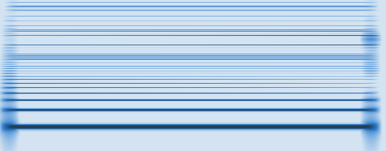
time →pitch ↑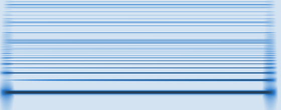
time →pitch ↑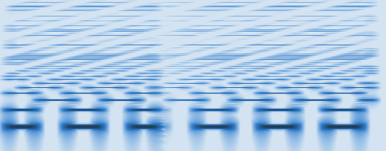
time →pitch ↑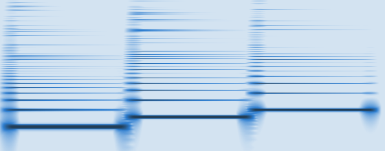
time →pitch ↑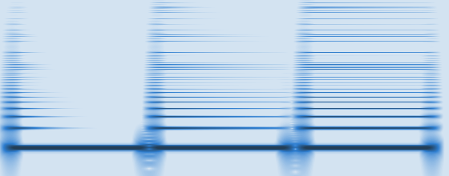
time →pitch ↑| top, bottom | Top tension limits how far blur spreads upwards. Bottom sets how loud the blurred partials are. |
| blur decay | Gives the pluck a slower, softer tail. |
| Pluck shape | In the ENV page: which partials die fastest. |
A moving pattern of notches. Each picture is one held note with the phaser sweeping.
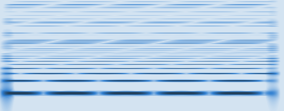
time →pitch ↑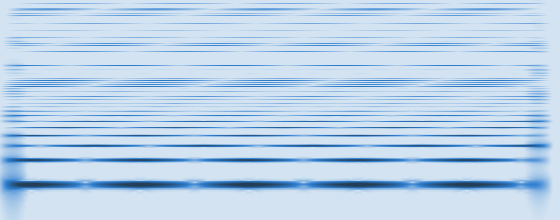
time →pitch ↑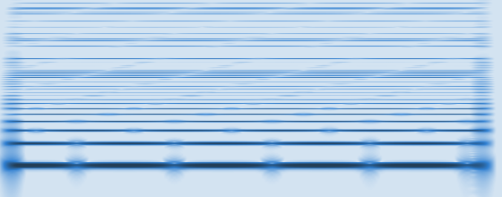
time →pitch ↑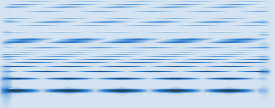
time →pitch ↑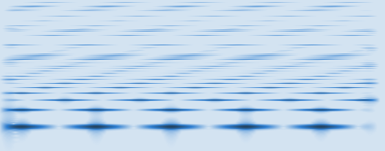
time →pitch ↑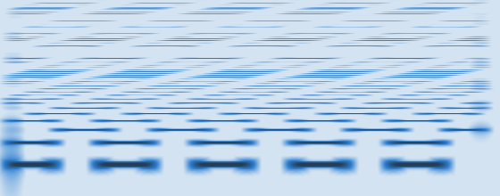
time →pitch ↑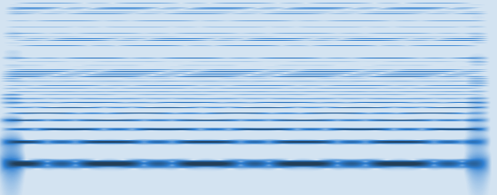
time →pitch ↑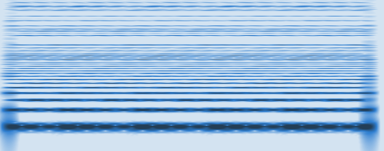
time →pitch ↑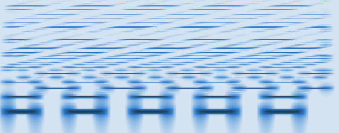
time →pitch ↑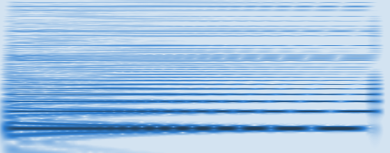
time →pitch ↑| speed | Centre is still. Right sweeps up, left sweeps down; further out is faster. Shown as the number of steps one sweep takes. |
| kb | Shifts the pattern with the note. |
| scale | Notches spaced in octaves, in Hz, or by harmonic number. |
| width lfo | Lets a slow LFO move the width. |
| freq / custom | Freq bends the pitch of the partials with the Phaser shape graph; custom uses that graph as the notch shape. |
| by level | Prism moves loud partials more (On) or quiet ones more (Inverted). |
| amount, width, strength | How much harmonizer, how high up it reaches, how strong the copies are. |
| offset | Moves the shift or gap pattern up in octaves. |
This is where things move. Pick a target on the left, pick a part (Envelope, LFO, or one of the mappings), switch it on, and draw.
| Articulation | Things that can move during a note: volume, panning, filter frequency, pitch, phaser, prism and so on. Each has an envelope, an LFO and nine mappings. |
| Mapping | Things set per note: envelope attack / decay / release scales, LFO speed and amount, unison phase, predelay. Mappings only. |
| Shaping | One graph each: the partials of timbre 1 and 2, their phases, EQs, custom filter and resonance shapes, pluck shape, masks that keep an effect away from part of the range. |
| Keyboard, Velocity | Left to right is low to high note, or soft to hard. |
| Modulation X, Y, Z | The three x / y / z bars in the MODULATION section. Automate them from your host. |
| Random | A new random position along the graph for each note. |
| Unison index | A value per unison copy (works for panning, volume and pitch). |
| Held index | First held note, second, third... |
| Mod X speed | How fast X is moving. |
| Volume, mixes, widths, amounts | The knob is the maximum. The graphs scale it down: top of the graph is the knob value, bottom is zero. |
| Pitch, panning, filter frequency, offsets | The knob is the centre. Graphs add to it: the middle line is no change. For pitch the top is +4 octaves and the bottom -4. |
| Filter frequency envelope | The exception: bottom is no change, and the filter's "env" bar sets how far the top reaches, up or down. |
| Add a point | Right-click or double-click the background. |
| Move a point | Drag it. Shift keeps its height, Alt keeps its time. |
| Delete a point | Alt-click it, or right-click it and choose Delete. |
| Bend a line | Drag the small circle in the middle of a segment. Cmd-drag for fine steps. Right-click the circle to straighten. |
| Right-click a point | Segment type (hold, smooth, curves, stairs, pulse, wave...), sustain / loop end (S), loop start (L), arpeggiator break. |
| snap / slide / lock | Snap to the grid; moving a point moves everything after it; lock against changes. |
| attack, decay, sustain, release | Stretch or shrink that part of the drawn envelope while you drag. They spring back to x1.00 when you let go. |
| tempo / global | Tempo: times are in beats. Global: all notes share one envelope or LFO, restarted by each new note. |
| smooth | Rounds off sudden jumps of the target. |
| options | Reset, flip, normalize, decimate, smooth up, scale levels, draw per harmonic (bars), make all loop, follow an audio file, create a step sequence. |
| Volume envelope off | The note simply starts and stops with the key. |
Drop a sound file or a picture on the window. A sound is taken apart into partials and can then be played at any speed and pitch (resynthesis). A picture is played directly: left to right is time, bottom to top is partial 1 to 516, brightness is level.
| Click in the image | Sets the start position (time). Shift-drag selects a stretch. Ctrl-drag or Cmd-drag sets the loop region. |
| speed, coarse | Playback speed, backwards when negative; coarse multiplies it up to x64 or down to almost stopped. |
| smooth | How gently a moved start position is followed. Right of centre, big jumps are instant. |
| looping | One-shot, Loop, Ping pong. |
| sharp | For sounds: puts the partials back in step at each attack so transients stay crisp. |
| LEVEL scale, mix | Loudness of the picture; at mix 0% the picture is ignored and you hear the plain timbre. |
| FREQUENCY scale, mode | How strongly, and how, the frequency plane bends the partials: by octaves, Hz, wide Hz, or as unison detune. |
| curve | How one column blends into the next: Block, Cap, Bell, Linear, Cubic, Rise, Fall. |
| plane | Look at the level picture (Gain), the pitch-bend picture (Freq), or both. |
| options | Analyze audio, open picture, high precision analysis (516 bands, tuned to the sound, instead of 255), convert to image synthesis, save as PNG, loop region, map slices to keys, time envelopes, random cloud, degrade, crossfade, crop, invert, flip. |
A sine wave through each type at amount 60%.
| asym | Up: lopsided. Down: lopsided in opposite directions left and right. |
| mix | 50% is distorted only, 0% an even blend, 100% clean. Negative flips it. |
| high cut | Softens the result. |
| Chorus | order = number of voices (0 is off). The presets menu fills in classic settings. mix: centre dry, right chorus, left flipped chorus. |
| Delay time | Right of centre: steps of the tempo. Left: milliseconds. Modes: Normal, Inverted (left and right swap each echo), Ping pong. |
| Reverb | Presets, color, input low and high cut, predelay, room size, diffusion, decay, damping, wet. |
| Compression | Limiting holds the peaks. Warming, Heating and Burning squeeze three bands and lift the low end more each time. low / mid / high set the band levels. |
| LEVELS pre / post | Volume into and out of the effects. |
| predelay | Waits before the note starts. Left: milliseconds. Right: tempo steps. |
| poly rel | Below 100%, a new note shortens the release tails still sounding. |
| declick | A very short fade at the start and end of notes. |
| UNIT ORDER | The order the shaping stages run in. Click an entry to move it later, right-click to move it earlier. Example: put HARM PROT after HARM CLIP to keep the fundamental safe from clipping. |
| EFFECTS ORDER | The same for the five effects. |
| randomness | Whether random values are new per note, per part, per unison copy, or never change. |
| A/B as stereo sides | Load the same stereo sound into A and B: A carries the middle, B the sides, and the A/B mix sets the width. |
| partials | Fewer partials uses less processor and loses the top end. |
| precision | How often the shaping is recalculated: Average about every 5 ms, High 2.7 ms, Perfect 1.3 ms. "HQ when rendering" uses Perfect for offline bounces. |
| VOICES mono | Off; a repeated note cuts itself (Kill same); any new note cuts all (Kill all); or sends them into release (Release all). |
| 16 notes at once | Each with up to 9 unison copies of up to 516 partials. Low notes with high unison cost the most. |
| It can get loud | High resonance with self-oscillation, or harmonizer and blur at full, add a lot of level. Auto-gain or the Limiting compressor help. |
| Saved presets | Plain text files ending in .partials. Drop one on the window to load it. |
| Not in this version | Copying pictures through the clipboard, copy / paste of line points, envelope state files, and the step-sequence editing window (there is a menu of ready-made sequences instead). |